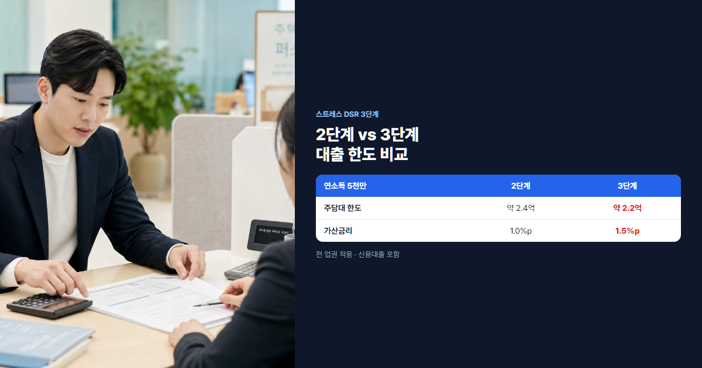

2026년 7월 시행 부동산 정책 총정리 (스트레스 DSR 3단계·규제·공급 완벽 정리)
대출·세금·공급·규제, 네 갈래가 동시에 바뀌는 시점
"7월부터 대출이 더 어려워진다? 뭐가 바뀌는 거지?" 2026년 하반기를 앞두고 직장인 사이에서 가장 많이 오가는 질문입니다. 2026년 7월은 부동산 정책이 대출·세금·공급·규제 네 영역에서 동시에 움직이는 변곡점으로 꼽힙니다. 특히 스트레스 DSR 3단계가 본격 시행되면, 같은 연봉이라도 주택담보대출·전세대출·신용대출 한도가 5~10% 줄어들 수 있습니다. 모르고 지나치면 "분명 될 줄 알았는데 안 된다"는 상황이 생깁니다.
- 스트레스 DSR 3단계의 의미, 가산금리 1.5%p, 대출 한도 시뮬레이션을 정리합니다.
- 청년월세지원 연장, 세제(종부세·양도세·취득세), 공적임대·3기 신도시 등 핵심 변화를 설명합니다.
- 대출·청약·청년 각각을 위한 7월 전 체크리스트와 FAQ까지 담았습니다.
본론 1. 스트레스 DSR 3단계 시행 ★ 핵심
스트레스 DSR이란?
DSR(총부채원리금상환비율)은 연소득 대비 1년에 갚아야 하는 원리금 비율입니다. 예를 들어 DSR 40%라면 연소득 5,000만원 가구는 1년에 약 2,000만원까지 빚을 갚을 수 있습니다. 스트레스 DSR은 여기에 미래 금리 상승 위험을 미리 반영해 대출 한도를 더 보수적으로 계산하는 제도입니다. "지금 금리로 빌리더라도, 2~3년 뒤 금리가 오르면 감당할 수 있나?"를 미리 검증하는 셈입니다.
단계는 1단계(2024년 2월) → 2단계(2024년 9월) → 3단계(2026년 7월)로 강화되었습니다. 정부는 가계부채·부동산 시장 안정을 위해 점진적으로 적용 범위와 가산금리를 높여 왔습니다. 1단계에서는 은행권 주담대 위주였고, 2단계에서 전세·신용대출이 확대되었으며, 3단계에서는 2금융권·보험·카드사까지 동일 기준이 적용됩니다. 가계부채가 1,900조원을 넘는 상황에서 "금리가 오르면 감당 못 할 대출"을 사전에 걸러내겠다는 취지입니다.
3단계 주요 내용
- 모든 업권의 가계대출에 적용 — 은행·저축은행·보험·카드사·캐피탈 등
- 가산금리 1.5%p — 2단계(1.0%p)보다 0.5%p 상향
- 주택담보대출·전세자금대출·신용대출 모두 스트레스 금리로 한도 산정
- 은행권·2금융권·보험사 등 전 업권 통일 적용으로 규제 사각지대 축소
- 신용대출은 일부 완화·예외 검토 논의가 있으나, 원칙적으로 포함된다고 보는 것이 안전합니다

대출 한도 변화 계산 예시
연소득 5,000만원, 기존 대출 없음, 주담대 금리 4.0%·30년 만기 가정 시 (실제 한도는 은행·DSR 규제·담보가치에 따라 달라집니다):
| 구분 | 스트레스 가산 | 적용 금리(예시) | 예상 한도 |
|---|---|---|---|
| 2단계 | +1.0%p | 5.0% | 약 2.4억원 |
| 3단계 | +1.5%p | 5.5% | 약 2.15~2.2억원 |
같은 2억원 대출 시, 스트레스 금리 5.0% → 5.5%만 되어도 월 원리금이 약 5~7만원 늘어날 수 있고, 은행이 산정하는 최대 한도는 5~10% 축소되는 경우가 많습니다.
연소득 7,000만원 맞벌이 부부 사례도 참고해 보세요. 기존 신용대출 3,000만원·카드론 1,000만원이 있다면, 3단계 적용 후 주담대 한도가 2단계 대비 2,000만~3,000만원 줄어드는 경우가 있습니다. 신용대출까지 스트레스 금리로 합산되기 때문에, "주담대만 따로" 계산하면 실제와 차이가 납니다. 은행 앱의 DSR 계산기에 모든 대출을 넣어 보는 것이 정확합니다.
⚠️ 7월 직전 주의
심사 기준일이 7월 이후로 잡히면 3단계가 적용됩니다. 가계약·사전심사만 받고 실행을 미루면 한도가 줄어들 수 있으니, 실행 시점을 반드시 확인하세요.
대응 전략
- 7월 이전 실행 — 심사·실행 일정이 허용된다면 2단계 기준 적용 가능성 검토
- 정책대출 — 디딤돌·보금자리론 등 별도 규제 적용 여부 확인 (일반 시중은행과 다를 수 있음)
- 부부합산 소득 — 맞벌이 합산으로 DSR 여유 확보 (단, 배우자 채무 합산 주의)
본론 2. 청년 월세 지원 사업 1년 연장
연장 배경 및 기간
청년 주거비 부담 완화를 위해 청년 월세 지원 사업이 2026년 5월 9일까지 1년 연장되었습니다. 물가·전세·월세 상승 속에서 청년 1인 가구의 고정비를 줄이려는 목적입니다. 청년월세지원 상세 가이드와 함께 보시면 신청 조건을 빠르게 확인할 수 있습니다.
지원 대상 및 조건
| 항목 | 조건 |
|---|---|
| 연령 | 만 19~34세 무주택 청년 |
| 소득(청년가구) | 기준중위소득 60% 이하 |
| 소득(원가구) | 부모 포함 100% 이하 |
| 임차 조건 | 보증금 5천만원 이하, 월세 60만원 이하 |
지원 금액 및 신청 방법
월 최대 20만원, 12개월 지원(최대 240만원)입니다. 복지로(bokjiro.go.kr)에서 온라인 신청이 가능하며, 임대차계약서·소득·무주택 증빙 서류가 필요합니다. 관할 지자체·LH 안내에 따라 세부 절차가 다를 수 있으니 사전 상담을 권장합니다.
💡 청년월세지원 신청 꿀팁
- 임대차계약서 확정일자를 먼저 받아 두세요. 계약 체결 후 1개월 이내 신청이 유리합니다.
- 부모와 따로 살아도 원가구 소득 100% 기준이므로, 건강보험·지방세 납부 확인서를 미리 준비하세요.
- 월세 60만원 이하라도 실제 납부액 기준이므로, 관리비 포함 여부를 계약서에서 확인하세요.
본론 3. 부동산 세제 개편
종합부동산세 강화
다주택자에 대한 종합부동산세(종부세) 중과세율이 유지·강화되는 방향입니다. 공시가격 현실화율 조정 논의도 이어지며, 과세표준 상승 가능성을 염두에 두어야 합니다. 1주택자는 장기보유특별공제 등 기존 혜택이 유지되나, 보유 기간·거주 요건 변경 검토가 있을 수 있으니 매년 9월 종부세 고지 전 확인이 필요합니다. 예를 들어 공시가격 6억원 아파트를 10년 이상 보유한 1주택자는 기본공제·장기보유공제로 납부세액이 크게 줄지만, 2주택 이상이면 중과 구간(1.2~6.0%)이 적용되어 부담이 급증합니다. 7월 이후 매수·매도 계획이 있다면 종부세 납부일(12월)까지의 보유 형태를 시뮬레이션해 보세요.
양도소득세 조정
다주택자 양도소득세 중과(기본세율 + α)는 단기 매매 억제 목적으로 유지됩니다. 1세대 1주택 비과세는 2년 이상 보유·거주 등 요건 충족 시 적용됩니다. 일시적 2주택 특례(신규 주택 취득 후 기존 주택 처분 기간)는 기간·요건을 꼼꼼히 확인해야 중과를 피할 수 있습니다. 매도 타이밍은 세무사·국세청 상담을 병행하세요.
취득세 변화
- 생애최초 취득세 감면 200만원 수준 유지(지역·요건 상이)
- 신혼부부 감면 — 혼인 기간·소득·주택가격 요건 충족 시
- 다주택자 중과 — 조정대상지역 등에서 8%~12% 구간 적용 사례
본론 4. 공급 정책 — 공적임대·공공분양
임기 내 공적주택 110만 호 공급
정부는 임기 내 공적주택 110만 호 공급을 목표로 합니다. 2026년만 해도 공적임대 15.2만 호 수준을 노립니다. LH·SH 등 공공기관이 청년·신혼·고령자 맞춤형 임대 물량을 공급하며, 민간 분양과 병행해 주거 안정을 꾀하는 구조입니다.
3기 신도시 진행 현황
남양주 왕숙, 하남 교산, 인천 계양 등 3기 신도시가 본격 분양 단계에 접어들었습니다. 사전청약 → 본청약 일정에 맞춰 청년특별공급·신혼특별공급·생애최초 물량을 확인하세요. 무주택 기간·가점과 청약 가점 계산기로 사전 점검이 유리합니다. 왕숙·교산은 수도권 직주근접 수요가 몰리는 지역이라 청약 경쟁률이 높을 수 있습니다. 계양은 인천 서구·부평 접근성이 좋아 실수요자 관심이 큽니다. 사전청약 당첨 시 본청약 우선권이 주어지는 경우가 많으니, 관심 단지 공고가 뜨면 청약통장 잔액·순위를 즉시 점검하세요.
공공분양 아파트 확대
뉴홈(New Home) 브랜드 아래 나눔형·선택형·일반형 세 가지 유형으로 공급됩니다. 분양가는 인근 시세 대비 70~80% 수준을 목표로 하며, 거주·전매 제한 등 조건이 붙습니다. "싸다"만 보지 말고 거주 의무·재분양 제한을 함께 비교하세요.
월급쟁이 필수 체크리스트
대출 계획이 있다면
- 7월 이전 실행 가능 여부 — 심사·잔금 일정 역산. 가계약만 하고 실행을 7월 이후로 미루면 3단계 적용됩니다.
- 스트레스 DSR 3단계 한도 — 은행·HF 시뮬레이션 2곳 이상. 신용대출·카드론까지 합산해 계산하세요.
- 정책대출 — 디딤돌·보금자리 자격·한도 (비교 가이드). 소득·주택가격 요건을 6월 안에 확인하세요.
청약 계획이 있다면
- 무주택 기간·부양가족·통장 가점 — 인정 기준 재확인
- 3기 신도시 사전청약·본청약 일정 캘린더 등록
- 신혼·생애최초 특별공급 소득·주택가격 요건
청년이라면
💡 한 줄 요약
- 대출 예정 → 7월 전 한도 먼저
- 청약 예정 → 가점·일정 먼저
- 월세 부담 → 청년월세지원 먼저
자주 묻는 질문 (FAQ)
Q1. 스트레스 DSR 3단계 시행되면 대출 한도가 얼마나 줄어드나요?
개인·담보·금리에 따라 다르지만, 통상 5~10% 축소를 예상합니다. 연소득 5,000만원·주담대 기준으로 1,500만~2,500만원 한도 차이가 날 수 있습니다. 정확한 수치는 취급 은행 DSR 계산기로 확인하세요.
Q2. 기존 대출자도 3단계 적용받나요?
기존 실행 대출의 금리·상환액이 즉시 바뀌지는 않습니다. 다만 추가 대출·대환·연장 시 3단계 기준이 적용됩니다. 금리 변동형 대출은 별도로 금리 인상 시 상환 부담이 늘 수 있습니다.
Q3. 정책대출(디딤돌·보금자리론)도 스트레스 DSR 적용되나요?
정책대출은 별도 DSR·DSR 스트레스 규정이 적용되는 경우가 많습니다. 다만 시행 세부 지침은 시점마다 달라질 수 있으므로, HF·취급 은행에 2026년 7월 이후 기준을 반드시 확인하세요.
Q4. 청년월세지원 신청은 언제까지 가능한가요?
사업 연장에 따라 2026년 5월 9일까지 접수·지원이 이어집니다. 예산 소진 시 조기 마감될 수 있으니, 자격이 되면 빠르게 신청하는 것이 좋습니다.
Q5. 7월 정책 시행 전에 미리 준비해야 할 것은?
① 대출 예정자 — 한도 조회·실행 일정, ② 청약 준비자 — 가점·무주택·통장, ③ 청년 — 월세지원·청년통장. 세 가지 중 해당되는 항목부터 처리하세요.
Q6. 3기 신도시 사전청약 일정은?
단지별로 다릅니다. 청약홈· LH·지자체 공고에서 왕숙·교산·계양 등 관심 지역 일정을 개별 확인하세요. 사전청약은 본청약보다 요건이 단순한 경우가 많아 놓치기 쉽습니다.
Q7. 다주택자 양도세는 2026년에 어떻게 변하나요?
다주택자 중과세율 유지 기조입니다. 보유 기간·조정지역 여부·1세대 1주택 전환 계획에 따라 세부 세율이 달라지므로, 매도 전 세무 전문가 상담을 권장합니다.
결론
2026년 7월은 스트레스 DSR 3단계가 핵심 키워드입니다. ① 대출 계획자는 한도 축소를 전제로 일정을 당기고, ② 청약 준비자는 가점·신도시 일정을 점검하고, ③ 청년은 월세지원·청년통장을 놓치지 마세요. 정책은 복잡하지만, 본인에게 해당하는 2~3가지만 먼저 실행해도 충분히 대비할 수 있습니다.
본 글은 2026년 7월 기준 일반 정보이며, 스트레스 DSR·세제·공급 정책은 법령·고시 변경에 따라 달라질 수 있습니다. 대출·청약·세무 결정 전 관련 기관에서 최종 확인하시기 바랍니다.